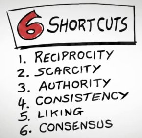
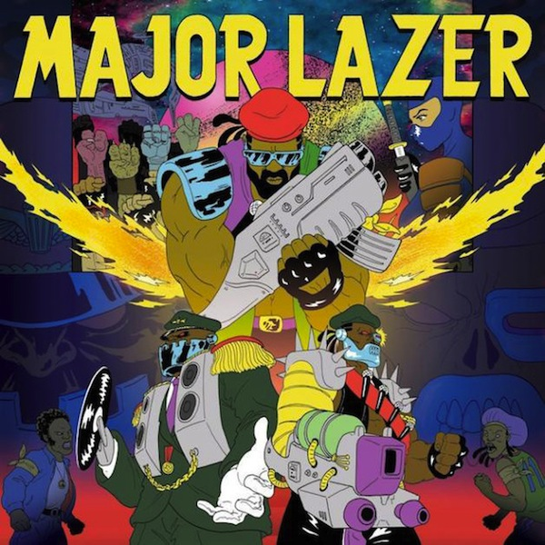

In deze opdracht is er verder gegaan op de opdracht van vorige week. De opdracht van vorige week ging over de NPO. Deze keer moesten er voorstellen gedaan worden aan de hand van Cialdini's principes. Deze voorstellen moesten uitgewerkt worden in een wireframe.

In deze opdracht moest er een redesign gemaakt worden van een website. Deze website moest van een muziek artiest zijn. In deze opdracht is er gekozen voor de muziekformatie Major Lazer. Van hun website is een redesign gemaakt. Vervolgens is dit redesign uitgewerkt in een klikbaar prototype.
In deze groepsopdracht is Datanose onder handen genomen. Datanose is op dit moment niet erg overzichtelijk. En daarbij gebruiken de meeste studenten Datanose alleen om hun rooster te bekijken. Hierom is ervoor gekozen om Datanose overzichtelijker te maken. Dit is gedaan door Datanose onder te verdelen in kopjes. Hierbij kreeg het rooster een prominente plek. In deze opdracht had ik de rol van technisch.